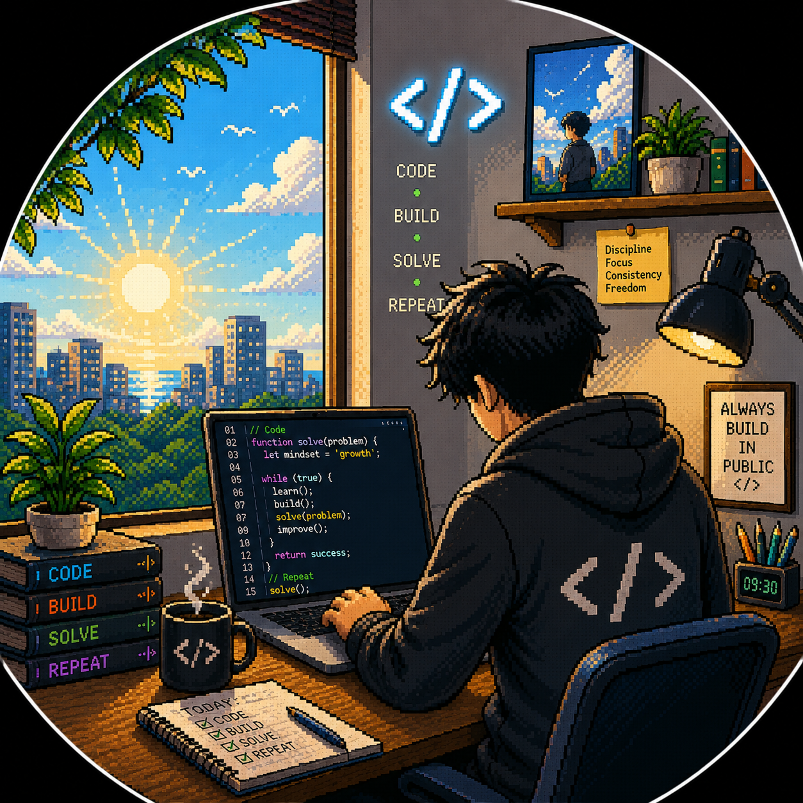

Hello! I'm
Ayush Saha
I
Computer Science and Engineering student at VIT-AP University. With strong interests in research, Generative AI, web development, and art, I enjoy exploring both technology and creative expression.

Technical Skills
⚔️ Languages
🗺️ Web & Frameworks
🔮 ML / AI
🎒 Cloud & Tools
📜 Concepts
Education
- Computer Science and Engineering | VIT-AP University (2023 – 2027) | CGPA: 8.54
- XII (CBSE) | Sri Sri Ravishankar Vidya Mandir | 87.8% (2022)
- View Leetcode
Quest Log
★ NIT Calicut Summer Intern [Completed]
NIT Calicut– Finance Department (CITRA) (May'26 - July'26)Developed a full-stack TA (Travel Allowance) claims tracking system for the Finance Department under CITRA, covering claim submission, review, and approval workflows with Role-Based Access Control (RBAC) across Admin, Faculty, and TA roles. Built backend REST APIs and a React web interface with JWT-based authentication (including TOTP two-factor login) and a PostgreSQL schema to automate department-level claim tracking and reduce manual administrative overhead.
View Certificate View Project
★ AI Automation Engineer Intern [Completed]
Zeepty India (Aug’25 – Nov'25)Built supervised and unsupervised ML pipelines using PyTorch and Scikit-learn; fine-tuned models for production AI automation tasks. Preprocessed and integrated CSV datasets into ML pipelines, and automated end-to-end data workflows using Python.
LinkedIn View Certificate
★ AI/ML Data Analyst [Active]
GDG VIT-AP (Google Developer Groups) (Mar'26 - July'26)Performing dataset analysis, preprocessing, and supporting machine learning experiments within GDG VIT-AP’s AI initiatives.
View Certificate
Certifications
-
IBM – Generative AI Using Watsonx (CEWXAI1IN)
Prompt engineering, fine-tuning, and responsible GenAI deployment on Watsonx.ai & Watsonx.data. Issued by IBM Career Education.
View Certificate -
Wadhwani Ignite 3.4 – Entrepreneurship & Innovation Program
Completed a 14-week program focused on entrepreneurship, startup ideation, MVP building, and investor-ready pitch decks.
View Certificate -
AWS Academy Cloud Foundations Training
Gained foundational knowledge in AWS services (EC2, S3, IAM, VPC), cloud architecture principles, and security best practices.
View Badge -
AWS Academy Graduate - Cloud Architecting Training
Hands-on experience with AWS cloud services, scalable architecture, and secure cloud solutions.
View Badge -
IndiaAI Impact Gen-AI Hackathon – IISc CNI & IBM Research
Shortlisted nationwide for a 4-week Generative AI program. Gained hands-on experience with datasets, open-source tools, IBM ADK, WatsonX, Kaggle, and GitHub Classroom.
View Post
Academic Projects
TA Tracking System | NIT Calicut Internship Project
Developed a full-stack Travel Allowance (TA) claims tracking system for the Finance Department, covering claim
submission, review, and approval workflows. Implemented JWT-based authentication with optional TOTP two-factor
login, and Role-Based Access Control (RBAC) across Admin, Faculty, and TA-style user roles. Built the
PostgreSQL schema, migrations, and seed scripts, along with REST API routes consumed by a React frontend.
Technologies: Node.js, Express.js, React (Vite), PostgreSQL, JWT, TOTP-based 2FA, REST APIs.
GitHub Repository
Why I built this
During my internship with NIT Calicut's Finance Department, TA (Teaching Assistant) claim processing was handled manually, which made it slow to track submissions, verify approvals, and maintain accountability across different roles. I built this system to digitize and automate that workflow while ensuring proper access control between admins, faculty, and TAs.
Purpose
The purpose of this project was to give the Finance Department a reliable, role-aware platform for submitting, reviewing, and approving TA claims. The goal was to replace manual tracking with a secure, auditable system that clearly separates what each role (Admin, Faculty, TA) can see and do, while keeping the claims process transparent and easy to follow.
Challenges
One of the main challenges was designing a clean Role-Based Access Control system that correctly restricted claim visibility and actions across Admin, Faculty, and TA roles without adding unnecessary complexity to the API. Implementing secure authentication (JWT plus optional TOTP two-factor login) while keeping the login flow simple for non-technical department staff also required careful UX and security trade-offs. Structuring the PostgreSQL schema and migrations to support claim states (submitted, reviewed, approved) cleanly, and keeping the Express backend and React frontend in sync during active development, required consistent testing and iteration.
Microplastic Detection System | Python, U-Net CNN, Deep Learning, OpenCV
Designed a deep learning segmentation pipeline using Residual U-Net CNN to detect and quantify microplastic
pollutants in water samples. Ranked among the Top 10 teams at the VIT-AP External Expo (Engineering Clinics, 2026).
GitHub Repository
View
Certificate
Why I built this
As part of my Engineering Clinics project, I aimed to solve a critical bottleneck in aquatic research: the manual identification of microplastic pollutants. Traditional monitoring methods in environmental science are incredibly time-consuming and prone to human error, as they rely on researchers manually counting microscopic particles. I developed this automated detection pipeline to transform hours of manual lab work into sub-second digital analysis, providing an objective and scalable way to measure plastic concentrations in water bodies and protect aquatic health.
Purpose
Developed as part of an Engineering Clinics initiative, this project addresses the global challenge of micro-pollutant monitoring. Manual identification of synthetic particles in water samples is a slow, subjective process that hinders large-scale research. I built this automated detection pipeline to transform hours of laboratory microscopy into sub-second digital analysis. By creating an objective, machine-driven metric, the system provides a scalable tool for wastewater facilities and marine biologists to accurately track pollution levels and protect aquatic health.
Challenges
The primary challenge involved the high-fidelity detection of microscopic fibers, which are often so thin they can be "lost" or blurred during standard image processing. I solved this by implementing an architecture that preserves high-resolution spatial details, ensuring the geometric properties of fine synthetic threads are maintained. To handle "noise"—such as organic debris and air bubbles that mimic plastic—I engineered a preprocessing pipeline to normalize pixel intensities, allowing the model to distinguish synthetic polymers from natural matter. Finally, to overcome the extreme data imbalance where plastic occupies only a tiny fraction of the image, I utilized pixel-wise overlap metrics to ensure the system prioritized precise pollutant identification over the empty background.
Women Safety Backpack | VIT-AP University (Nov’24)
Developed a smart safety backpack using ESP32, GPS, and a mobile app for real-time alerts and tracking.
Emergency buzzer and Bluetooth connectivity included.
Technologies: ESP32, GPS, Bluetooth, Mobile App Development.
Why I built this
I built this project to explore how technology can be used to improve personal safety in real-world situations. Safety during travel and emergencies is a serious concern, and I wanted to work on a solution that combines hardware and software to provide immediate assistance when needed.
Purpose
The purpose of this project was to design a portable safety system that can send real-time alerts and location information during emergencies. By using sensors, GPS, and wireless communication, the goal was to create a simple and reliable device that could be easily integrated into everyday use.
Challenges
One of the main challenges was integrating multiple hardware components while ensuring reliable communication and low power consumption. Handling real-time GPS data, maintaining stable Bluetooth connectivity, and designing the system to be user-friendly while remaining cost-effective required careful planning and testing.
AGSA – Automated Government Service Agent | Google Gemini API, IBM Watsonx, Python
Multilingual voice-enabled AI chatbot supporting 11+ Indian languages with scheme discovery, DigiLocker verification,
and UMANG/CPGRAMS integration. Built at IndiaAI Hackathon – IISc CNI & IBM Research.
GitHub Repository
Why I built this
I built AGSA as part of the IndiaAI Impact Generative AI Hackathon organized by IISc CNI and IBM Research. The hackathon focused on using generative AI to solve real-world problems, and this project gave me the opportunity to work on a socially impactful use case involving access to government services.
Purpose
The purpose of AGSA was to design a multilingual, voice-enabled AI assistant that could help users navigate government services more easily. The goal was to reduce language barriers and complexity by providing conversational guidance while integrating with existing digital governance platforms.
Challenges
Handling multilingual input and maintaining accurate, context-aware responses across different user queries was a significant challenge. Designing effective prompts and managing integrations with external platforms required careful planning. Balancing social impact, system complexity, and usability within the hackathon timeline was another key challenge.
MyFileSharingSoftware | Python, TCP/UDP Sockets, AES-256, CustomTkinter
Lightweight encrypted P2P LAN file sharing desktop app using AES-256-CTR encryption, PBKDF2 key derivation,
UDP device discovery, and SHA-256 integrity verification—no internet or third-party servers required.
Technologies: Python, TCP/UDP Sockets, AES-256, CustomTkinter, Multithreading.
GitHub Repository
Why I built this
I built this project to understand how real-world file sharing systems work, especially focusing on networking and security. Most existing tools depend on the internet or lack strong privacy, so I wanted to create an offline solution that is both secure and efficient.
Purpose
The purpose of this project was to design a reliable file transfer system that works within a local network without external servers. The goal was to ensure secure data transmission, support large file transfers, and provide features like pause and resume for better usability.
Challenges
One of the main challenges was implementing secure encryption and authentication without affecting performance. Handling large file transfers with pause and resume functionality, managing multiple threads for networking and UI, and ensuring stability during network interruptions required careful design and testing.
Booklib Library Management Website
Web app using Django, JavaScript, HTML, CSS, and Python for book management, user authentication, and
personalized recommendations.
GitHub Repository
Why I built this
I built this project as part of the HackFest hackathon organized by the CSI VIT-AP chapter. The event focused on learning how to build websites from scratch, and this project gave me the opportunity to apply those concepts in a practical, time-bound environment while collaborating and problem solving under hackathon conditions.
Purpose
The purpose of this project was to create an interactive web application to help manage books in a library. The goal was to simplify basic library operations such as book tracking and user interaction while improving the overall usability compared to manual or non-interactive systems.
Challenges
Building the website from scratch within a limited time frame was a major challenge. Designing an interactive interface, structuring data logically, and ensuring smooth navigation required quick decision-making and constant iteration. Balancing functionality and simplicity during a hackathon was another key challenge.
AI Story Generator | IBM Generative AI Certification Project
Built using GPT-2 via Hugging Face, Flask backend, and React + TypeScript frontend. Generates creative stories
from user prompts in real time.
GitHub Repository
Why I built this
I built this project as part of my IBM Generative AI certification to practically apply what I was learning in the course. Instead of limiting myself to theoretical concepts, I wanted to prove my understanding of generative AI by building a complete, working application. Creating an AI that could generate new stories from user prompts felt like a fun and meaningful way to explore how language models behave in real scenarios.
Purpose
The main purpose of this project was to gain hands-on experience with generative AI and understand how text generation models work beyond examples and notebooks. I wanted to learn how to deploy a model, control its outputs, and integrate it into a real-time web application. This project helped me connect AI concepts such as prompt design, sampling strategies, and model inference with practical software development.
Challenges
One major challenge was dealing with hallucinations in the generated text, where the model would repeat the same word or phrase multiple times. This required experimenting with generation parameters such as temperature and sampling methods to reduce repetition while maintaining creativity. Another challenge was identifying a suitable model that could generate coherent stories while remaining lightweight enough to run efficiently. Solving these issues improved both the quality of the generated stories and my understanding of how generative models behave in practice.
Portfolio Website | Personal Project
Personal portfolio website to showcase projects, certifications, and skills.
View Portfolio
GitHub Repository
Why I built this
I built this portfolio website to present my projects, skills, and experiences in a structured and accessible way. Rather than relying on pre-made templates, I wanted full control over the design and functionality so that the portfolio itself could serve as a demonstration of my frontend development skills.
Purpose
The purpose of this portfolio is to clearly showcase my academic work, technical projects, and research interests to recruiters and collaborators. It also serves as a space to continuously improve the site by adding new features and refining the user experience, while keeping the website lightweight and fast using GitHub Pages.
Challenges
One challenge was organizing a large amount of information without overwhelming the user. I had to carefully structure sections, balance content density, and ensure responsiveness across devices. Implementing interactive features such as smooth navigation, dark and light mode, and expandable project details while maintaining performance was another key challenge.
AGSA – Automated Government Service Agent | Multi-Language
Developed multilingual, voice-enabled AI chatbot using Google Gemini API to simplify citizen access to
government services. Supports 11+ Indian languages, integrates with DigiLocker, UMANG, CPGRAMS, Bhashini.
GitHub Repository
Why I built this
I built AGSA as part of the IndiaAI Impact Generative AI Hackathon organized by IISc CNI and IBM Research. The hackathon focused on using generative AI to solve real-world problems, and this project gave me the opportunity to work on a socially impactful use case involving access to government services.
Purpose
The purpose of AGSA was to design a multilingual, voice-enabled AI assistant that could help users navigate government services more easily. The goal was to reduce language barriers and complexity by providing conversational guidance while integrating with existing digital governance platforms.
Challenges
Handling multilingual input and maintaining accurate, context-aware responses across different user queries was a significant challenge. Designing effective prompts and managing integrations with external platforms required careful planning. Balancing social impact, system complexity, and usability within the hackathon timeline was another key challenge.
Achievements & Hobbies
- Top 10 in Engineering clinics expo VIT-AP University - For the Microplastic Detection Project mentioned above.
- Gold Medal & Diploma of Distinction - International Youth & Child Art Exhibition, 2012
- First Place - Indian Oil Drawing Competition, 2013
- State-Level Painting Competition - Energy Conservation Campaign, 2013
- Global Mathematical Talent Probe - 78.9 percentile, IFSE Institute, 2013–14
- Third Place (Early Bird) - Digital India Poster Contest, 2015
- Summer Theatre Workshop - National School of Drama, 2014
- Great India Hack-Fest 2k24 - Selected for Round 2 (CSI Chapter, VIT-AP)
Positions of Responsibility
- Marketing Lead - Bongojo (VIT-AP Bengali Association), Jan’25–Mar'26
- Research Team Member - SEDS VIT-AP (part of SEDS India), Oct’23–Present
- Documentation Member - Bongojo, Nov’23–Jan’25
- Marketing Team Member - Geeks For Geeks VIT-AP, Nov’23–Jan’24
- Social Media Co-Lead - North-East Association, VIT-AP, Sep’25–Mar'26